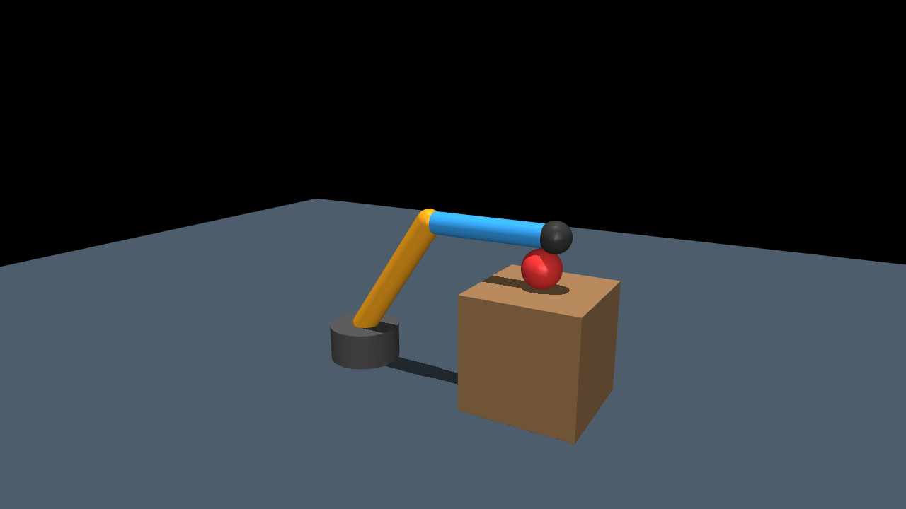
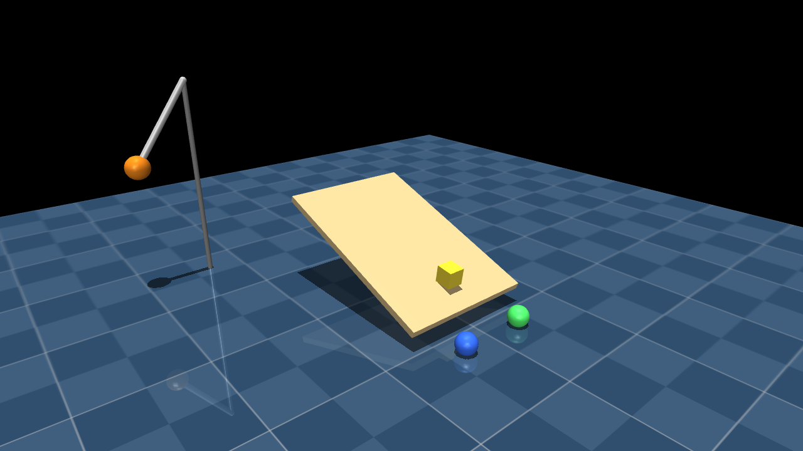
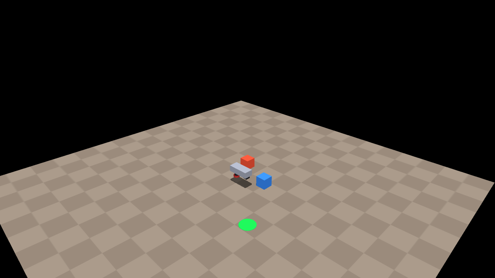

Plik XML: z czego zbudowany jest robot i świat. Kształty, masy, przeguby, silniki, czujniki, kamery.
dzien1/z2_ramie.xml
Funkcja mj_step: co się stanie w następnej chwili? Liczy siły, kontakty, ruch.
mujoco.mj_step(model, data)
Okno, w którym widać symulację. Można obracać kamerą, pchać obiekty, ruszać suwakami silników.
python -m mujoco.viewer
Powstał w 2012 r. (Emanuel Todorov), od 2021 r. rozwijany przez Google DeepMind, od 2022 r. darmowy i otwarty.
worldbody: świat, wszystko jest w nimlight: lampa (inaczej będzie ciemno)geom bez ciała: nieruchoma podłogabody: ciało, 1 m nad ziemiąfreejoint: może się swobodnie ruszaćgeom w ciele: jego kształt (i masa)Jednostki: metry, kilogramy, sekundy, niutony.

Dziecko porusza się razem z rodzicem. Pozycja ciała (pos) jest podawana względem rodzica.
geom: kształtsphere box capsule cylinder plane mesh
Ważne atrybuty: size, pos, rgba (kolor), mass, friction.
Zderzenia liczone są tylko między geomami.
joint: przegubhinge | zawias: łokieć, drzwi |
slide | prowadnica: szuflada, nasz chwytak |
ball | kula: bark człowieka |
free | wszystko: piłka, dron |
Ciało bez przegubu jest „przyklejone” do rodzica.
actuator: silnikmotor: daje zadaną siłę, tak jak śmigła drona.
position: serwo, samo dojeżdża do zadanego kąta. W środku to regulator PD!
Sterujemy przez data.ctrl, w zakresie ctrlrange.
sensor i camerajointpos: kąt przegubu. gyro: prędkość obrotu. accelerometer, framequat: orientacja.
camera: renderuje obraz, jak prawdziwa kamera (dzień 2!).
angle="degree" przelicza tylko kąty w modelu.
Sterowanie i odczyty (ctrl, qpos, czujniki) są zawsze w radianach.
180° = π ≈ 3,14 rad
MjModel i MjDataWczytany z XML-a. Nie zmienia się w trakcie symulacji.
kpopt.timestepZmienia się w każdym kroku.
time: czas symulacjiqpos, qvel: położenia i prędkości przegubówctrl: komendy dla silnikówsensordata: odczyty czujnikówJak w grze planszowej: plansza i zasady (model) oraz gdzie teraz stoją pionki (data).
import mujoco
model = mujoco.MjModel.from_xml_path("dzien1/z2_ramie.xml")
data = mujoco.MjData(model)
while data.time < 5.0:
data.ctrl[0] = 1.0 # DZIAŁAJ: cel dla silnika barku [rad]
mujoco.mj_step(model, data) # fizyka: krok o model.opt.timestep
kat = data.qpos[0] # CZUJ: aktualny kąt barku [rad]
To jest pętla czuj → myśl → działaj z wykładu 1.
sim.step(...) w zadaniach z dronem robi dokładnie to: ustawia ctrl silników i woła mj_step.mj_step?Δt
krok czasowy (timestep)
solref: jak twarda i sprężysta jest ta „sprężyna”, czyli czy piłka się odbijafriction: tarcie (ślizganie, skręcanie, toczenie)<option gravity="0 0 -9.81"/>: grawitacja dla całego świata
Zadanie 1.1: piaskownica fizyki
| lewy przycisk myszy + przeciąganie | obrót kamery |
| prawy przycisk + przeciąganie | przesuwanie kamery |
| kółko | przybliżanie |
| spacja | pauza / start |
| Backspace | reset do stanu początkowego |
| dwuklik na obiekcie, potem Ctrl + przeciąganie | pchnięcie lub obrót obiektu |
| prawy panel → Control | suwaki silników |
| lewy panel → Rendering | kamery, przezroczystość, siły kontaktu |
przeciągnij plik .xml na okno | wczytaj model ponownie po zmianach |
Księżyc, tarcie, odbijanie, domino.
~10 min
Dodaj przedramię, łokieć i silnik. Zrzuć kulkę ze stołu.
~20 min

Zbuduj chwytak z kamerą. Jutro ułoży wieżę!
~20 min
uv run python -m mujoco.viewer --mjcf=dzien1/z1_piaskownica.xml
Opis zadania jest na końcu każdego pliku .xml.